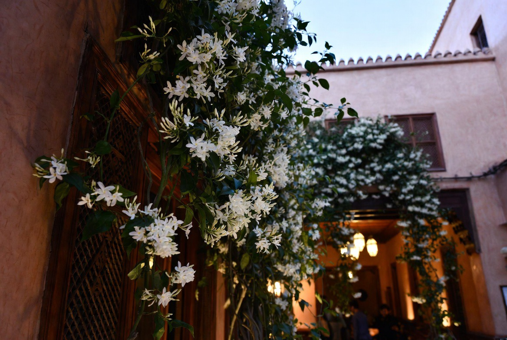
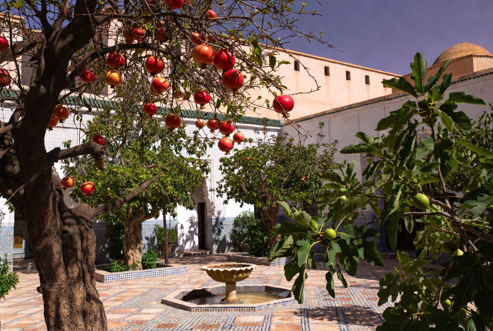
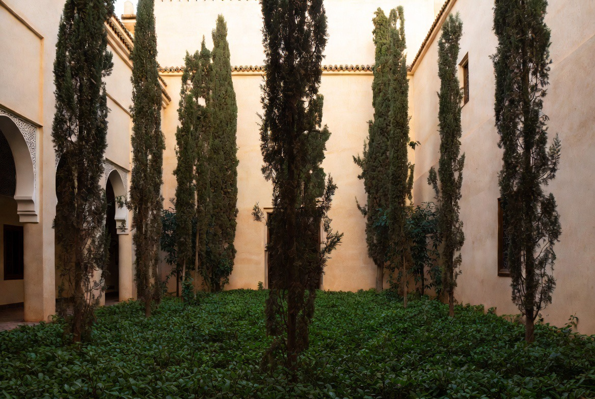

Garden & Kitchen Garden
The garden is not decoration. It is a living, ordered and productive space, faithful to the tradition of the Arab riyad.

In Arab culture, the garden is a model of order: water, shade, scent and food are conceived together there. The riyad does not oppose the beautiful and the useful — it holds them in one rhythm.
At the Riad, three spaces stand apart without being separated: the main garden, the secret garden (bustan) and the kitchen garden. Each has its function, its light, its silence.
This is not a pleasure park. It is a living system that forms the eye, feeds the table and recalls that beauty, here, begins with the earth.
The structure of the Riad
Axes, flowerbeds, a basin, shaded walks. Water organises the path; trees mark time. One does not cross the garden as a backdrop: one enters it, walks it, learns to see slowly.
MAIN GARDEN
Courtyard and walks, citrus, myrtle, jasmine. Shade and scent for the daily life of the house.
SECRET GARDEN
Bustan more withdrawn: rare roses, lilies, chosen species. Denser silence, measured access.
KITCHEN GARDEN
Vegetables, herbs, fruit trees. Working the land is part of formation.
The chahar bagh — a diagram, not an ornament
The Islamic garden is not a vegetal décor: it is a cosmology set in the earth. And its origin is not Arab, but Persian.
Root and name
The Greek word paradeisos (παράδεισος) — the origin of our “paradise” — comes from the Old Persian pairi-daēza (“circular enclosure”, an Avestan term whose original cuneiform script has no modern typographic equivalent — it is therefore left in Latin transcription). From the Achaemenid period onward (Pasargadae, 6th century BCE), and especially under the Sassanids, the garden was already the image of the cosmos and of royal power: water, trees, geometry, closure toward the outside.
Islam does not erase this model: it absorbs and theologises it. The Quran evokes the gardens of paradise crossed by rivers; Persian architecture gives it its concrete form.
The classical structure
Four equal sectors; two crossing axes of water — the four rivers; at the centre, a basin, a pavilion or a fisqiya (فسقية); walls or porticoes that close the gaze toward the interior; an ordered vegetation, between shade, scent and utility. This is not a natural landscape: it is a diagram — order, measure, continuity of water, separation from the chaos outside.
One form, several worlds
| Region | Transmission |
|---|---|
| Central Asia and Iran | Direct continuity — Isfahan, Shiraz, Safavid gardens. |
| Mughal India | Monumental chahār bāgh — Taj Mahal, Shalimar, the tomb of Humāyūn. The water axis becomes imperial staging. |
| Ottoman Empire | A freer adaptation; water remains central, the geometry loosens. |
| Al-Andalus and the Maghreb | Persian influence arrives mainly through Umayyad and Abbasid Syria and Iraq, before merging with the Roman and local heritage. |
The Andalusian and Maghrebi synthesis
In al-Andalus, the Persian chahār bāgh (چهار باغ) is not copied to the letter: it is reinterpreted. The great water axes remain — the Generalife, the Patio de la Acequia. The ground-level fisqiya and the low channels almost become its signature — the Alcázar of Seville, the Alhambra. Water enters even into the rooms, as at the Zisa in Palermo: the garden is no longer only a courtyard, but an extension of the architecture. In the Maghreb, the riad's patio keeps the same logic on a domestic scale: a centre of water, sectors, an enclosure, a coolness.
Thus: the geometry and symbolism of the four rivers come from Persia; the low fisqiya, the channel that extends into the room, and the enclosed patio of the riad are, in turn, the fruit of the encounter with Andalusian and Maghrebi taste.
What remains essential
The enclosure — the garden is a world apart. Flowing water — never stagnant, never spectacular in height. Cross geometry — the four sectors, the four rivers. Shade and measure — not the open, Western-style lawn.
For the Riad, this means that the patio and the garden are not a “green border”: they are the traditional form, of Persian and Andalusian heritage, where order, water and silence educate the eye and the body — the same logic that connects Dar al-Hiraf, the prayers and the rhythm of the house.
The main garden
Shared space of the house. Citrus, shrubs and aromatics structure the shade and the scent there. It is the most visible face of the riyad.
The plants

Citrus
Bitter orange trees, lemon trees, sometimes bergamot. Shade, blossom scent, fruit for the table and orange blossom water.

Myrtle (arrayán)
Myrtus communis. Emblem of Andalusian and Maghrebi gardens. Dense foliage, discreet flower, ritual and ornamental use.

Jasmine
White jasmine and night jasmine. The scent of evening, linked to the tradition of inner courtyards.

Pomegranate & fig tree
Trees of Mediterranean memory. Fruit, shade, symbolic presence in Arab culture.

Cypress
Verticality, silence, boundary. They mark the axes and protect the privacy of the spaces.

The secret garden
More withdrawn than the main garden. Old roses, lilies, stephanotis, rare species of the bustan. Stronger scent, thicker shade, measured access.
In the Arab tradition, the secret garden is not a gratuitous luxury: it is a place of restraint, of maturity, where one learns that not everything is given at once.
Those who work there — pruning roses, caring for delicate plants — learn patience as much as gesture.
The kitchen garden
Seasonal vegetables, herbs, a few fruit trees. The kitchen garden feeds the table of the house and forms those who live there: sowing, watering, harvesting, respecting the earth's time.

Food for the house
What grows here is not an aesthetic exercise. It enters the shared meals, the evening cooking, the concrete rhythm of the day.
Work and formation
Care of the kitchen garden is part of the formation of the young people of Dar al-Hiraf. The hand that carves wood or lays zellige also learns to touch the earth.
الحديقةُ ظلٌّ وماءٌ ورائحةٌ
وموضعُ سكينةٍ لمن عرفَ أن يبطئَ
« The garden is shade, water and scent —
and a place of quietude for those who know how to slow down. »
Tradition of the riyad — a contemporary reading
The terms on this page are gathered in the glossary of the house.